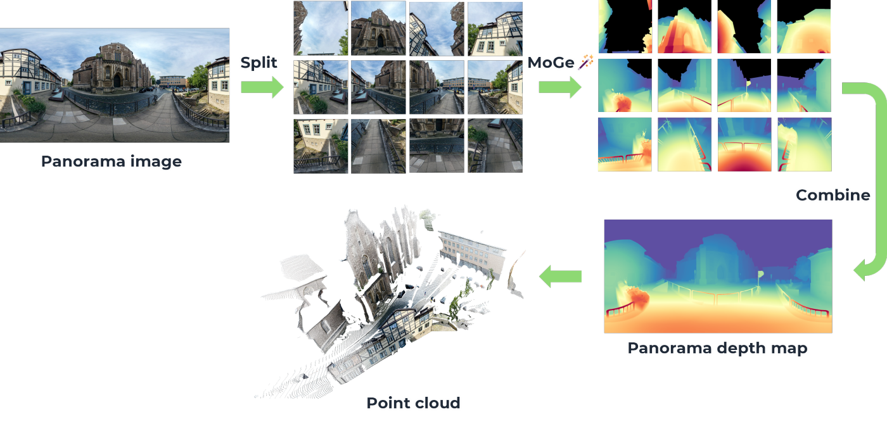
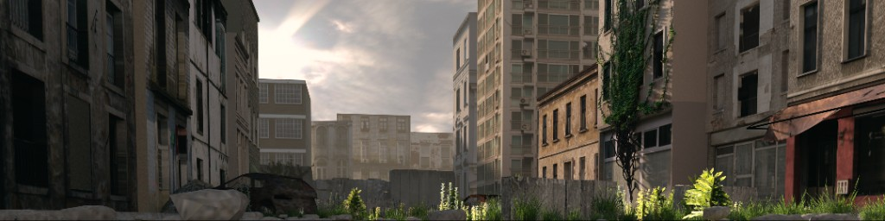
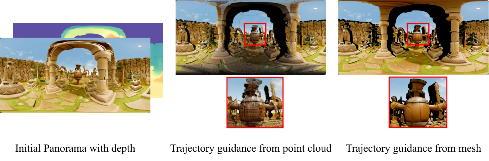
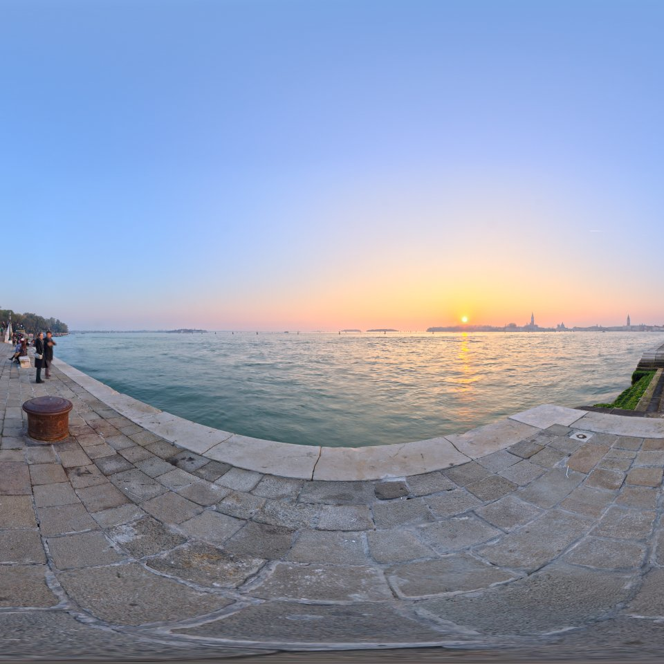
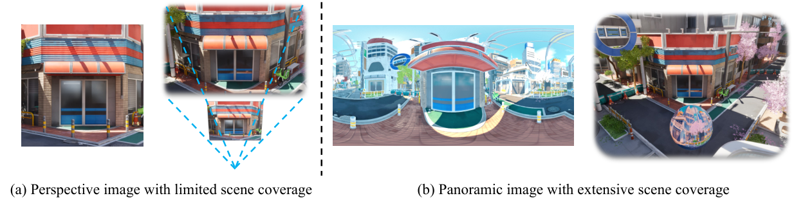
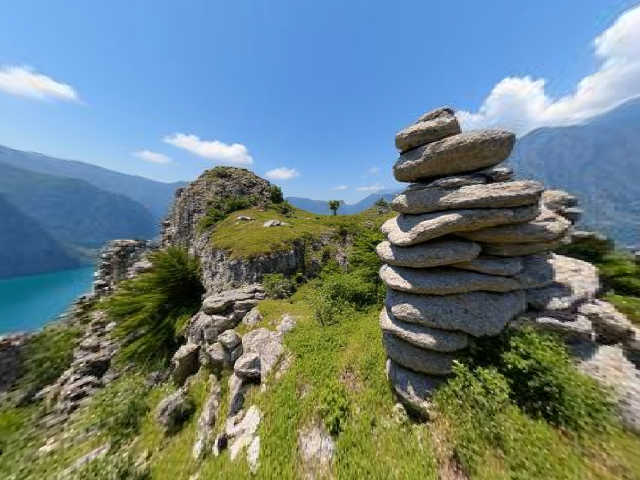
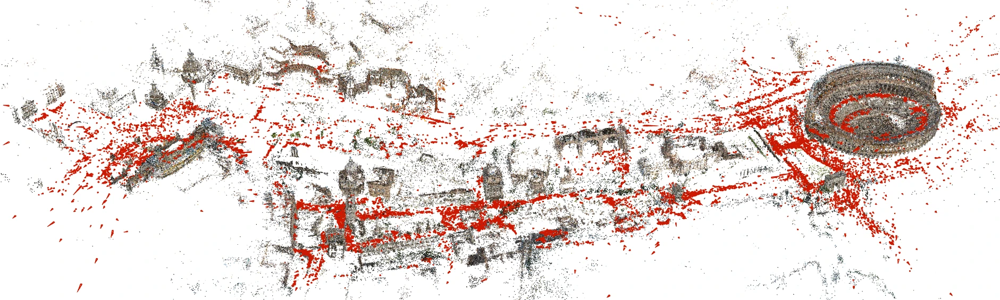
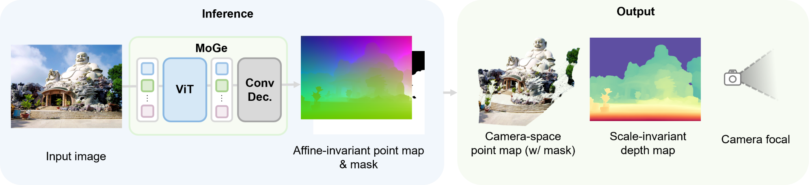

Phase 3 · Depends on P2 splat plumbing + P1 8K pano
Four rails, one MoGe-2 depth, a WorldStereo joint sample, then pinhole HiRes. Wan 2.1, Matrix-3D, and LightX2V are not in this build.
4x-UltraSharp fills only the holes.There is no count that produces a perfect scan. Extra rails do not raise per-view fidelity — every path reprojects the same MoGe depth. They buy explorable volume (SplatKit measured six paths reaching 1.12 from the anchor vs 0.80). Glass, mirrors, and depth silhouettes stay MoGe failures no matter how many drones you add. Shorter travel per rail plus more rails beats one long rail: 8K coverage decays as you leave the origin (garden example: 0.85 at frame 0 → 0.49 at frame 80).

| Case | Rails | Why | Source |
|---|---|---|---|
| P2 scout | 1 | Plumbing. Black holes OK. | P2 lock |
| Quality default | 4 | Graph CAMERA 1–4. Video: “usually more than enough.” Suggest-paths default 4. | JSON + transcript + path_suggest.py |
| Optional extra | +1 | Add-to-dataset node. HiRes auto_name=True. | JSON |
| Suggest-paths cap | ≤ 8 | suggest_paths clamps count to 8. | SplatKit |
| Hero (pond, statue) | 4, one of them look_at_target | Video: circle / aim at a pond. Graph camera 1. | Transcript + node 27 |
| High then descend | One crane-rise | Video extra-drone example. | Transcript + suggest |
| Corridor | push-in look_forward | Along the open azimuth, stay in clearance. | Suggest archetype 1 |
| Open garden / plaza | 4 short rails, not one long path | Coverage dies at the far end of a long rail. | HiRes known limits |
| Glass / mirrors | Do not add rails expecting a fix | Same wrong depth, more views. Water stays view-dependent after train. | HiRes + video pond |
| # | Label | Look | Motion |
|---|---|---|---|
| 1 | push-in | look_forward | S-dolly into the most open direction |
| 2 | arc-sweep | look_forward | Lateral S-arc while advancing |
| 3 | crane-rise | per_point_look | Rise while pushing in; aim on the wall ahead |
| 4 | pull-back | per_point_look | Retreat, hold aim forward (reveal) |
Quality default on first P3 open: copy the four SMPL knot sets (studio-garden demo), not a blank editor. Suggest paths is the “fit this room” button — same as SplatKit “✦ Suggest paths (all selected)”. Do not overwrite Confirm’d rails without asking.
All length=81, moge_level=9.
Rail 0 node 27 · look_at_target -0.108, 0.073, 1.953
0.000, 0.000, 0.000 0.199, 0.219, 0.488 -0.184, -0.093, 0.920 -0.065, 0.039, 1.404
Rail 1 node 122 · per_point_look (6-float lines)
0.000, 0.000, 0.000, 0.386, 0.021, 1.085 0.430, 0.021, 0.843, 1.784, 0.043, 1.931 0.819, 0.043, -0.292, 2.525, 0.032, -0.347 0.808, 0.032, -1.413, 2.411, 0.021, -1.983
Rails 2–4 are in the markdown (nodes 133, 144, optional 157). Copy them; do not invent a fifth path schema.
Same Compute geometry chrome as Phase 2.
P3 adds four rail slots, Suggest paths, and optional Add rail.
moge_level is shared (graph uses 9 on every Plot Camera).
The product now reads one scene-depth cache (MoGe-2, 2026-11-11). Dragging a point or switching Active rail does not rebuild Generate or Reconstruct. Play writes the rail and starts the mesh flight. A rail plotted on an older depth must be re-plotted before Generate.
Drag a point here. Switching Active rail does not rebuild Generate. Play writes the rail. Re-plot if the depth changed. Confirm rails unlocks Generate.

Active rail solid; others dimmed (dummy shows one rail). Star locked. Drag cameras 1–3 and the orange look-at. Play lives on the Preview flight pane.
Dummy of P3 Geometry. Video extras (pond orbit, high-then-descend) are Suggest-path archetypes or edited knots — not extra unnamed dropdowns.


One panorama cannot constrain a 3D scene. The mesh guide leaves holes where the panorama never looked. WorldStereo fills those holes. Known-pose COLMAP writes the dataset. Wan 2.1 I2V, Matrix-3D, and LightX2V are not used.


The prompt must describe the actual panorama. An empty prompt blocks Generate.
HiRes keeps the 8K panorama where the mesh can answer, and uses 4x-UltraSharp only in the holes.
WorldStereo memory-DMD, one 3090. Default is Joint: 20 frames per kept rail, split into samples of 20 that share memory. Empty prompt blocks Generate. HiRes all is a separate click.
80 frames, 20 per kept rail: 4 samples of 20, sharing memory.
Drag to set the order memory is carried across rails.
Empty prompt blocks Generate. Re-plot rails plotted on an older depth first. Start over clears WorldStereo output and the depth cache. The panorama and rails stay.
Rails · click a number to preview
Live preview · render | mask | keyframe
Rail shows the selected rail. Joint plays the whole sample. Guide holes are white. HiRes all composites the 8K pano, the shared layer, then the WorldStereo frame.
Worker: engine.workers.worldstereo. Preview is three live panes. HiRes all is engine.workers.pinhole_hires.
Ditch a rail if WorldStereo invented something you do not want. Reconstruct uses the kept rails. When loading finishes, the sparse pane is always this run.
Ditch a hallucinated rail, or Re-gen after editing the prompt.
3 kept rail(s). Showing current sparse — not a previous 1-rail solve.

After Reconstruct finishes loading, always this run’s sparse/0.
HiRes all does not repaint the whole frame. Where the MoGe-2 mesh can see the 8K panorama, those pixels stay.
4x-UltraSharp is used only in the holes, after the shared layer.
outputs/<scene>/depth, not a second MoGe pass.
| File | Role |
|---|---|
| WorldStereo memory-DMD FP8 | Generate |
dinov2-base | WorldStereo encoder |
umt5_xxl_fp8_e4m3fn_scaled.safetensors | WorldStereo text encoder |
clip_vision_h.safetensors | WorldStereo vision encoder |
MoGe-2 Ruicheng/moge-2-vitl-normal | Scene depth |
4x-UltraSharp.pth | HiRes holes only |
rails/rail_XX.json..ckpt without convert_pano_lora.py.base_mode=wan as splat default. Do not run PanoLRM.0-15,16-/8 while the graph is 0-80/2.points3D to flatten a bowed splat.